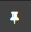
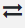

Relationships are based on the content of a specific field. When users select a particular document and want to view relationship details in
Family: intended to show documents that are related to one another, as in an email and its attachment. Family relationships are grouped by the BEGATTACH field and sorted by the BEGDOC field; you can define the details (fields and/or tag groups) to be included in the list.
Duplicates: intended to show documents that are the same in content. Duplicates are grouped by the MD5HASH field and sorted by the BEGDOC field; you can define the details (fields and/or tag groups) to be included in the list.
Near Duplicates: intended to show documents that are nearly the same in content. Duplicates are grouped by the MD5HASH field and sorted by the BEGDOC field; you can define the details (fields and/or tag groups) to be included in the list.
Email Thread: displays relationships among a family of email headers to be identified, based on their content and associated metadata. A combination of email headers and email body content is used to determine when emails belong in the same thread.
Document History: displays history of actions such as redactions and tags applied to the selected document. Although not modifiable, this report can be secured.
The Relationships panels are available at the left side of the Document Viewer that displays when you click a document listed in the Results grid view.
Any additional relationships created for a case can be added to the collapsed Relationships panels. To display any relationships that are not visible, click the below the collapsed panels on the left side. Additional custom relationships may be created through
To view the relationship information for the currently displayed document, click the desired relationship tab. Click the pin icon in the top right corner of the relationships tab to keep it open. Click it again to unpin it.
The Relationship panel can be resized when it is pinned. Point the cursor to the right side of the pane and you will see the horizontal arrow. Click and drag to resize.
The viewer will remember the width of the panel as it was last set.
When the panel is resized, and when it is pinned or unpinned, if fit to height is enabled, the image/native viewers will fit to height; otherwise they will fit to width.
This figure shows the Family
relationship in

The document outlined in green indicates what document is being viewed. The BEGDOC hyperlinks display in all Relationships panels. Click the BEGDOC hyperlinks to display that document in the Document Viewer window.
Return to the original document by clicking Back to original document.
Click the pin icon

again to collapse the relationships tab.Return to the original document by clicking Back to original document as shown in the following:

The BEGDOC hyperlinks also display in other Relationships panels, such as Email Thread, Duplicates, Near Duplicates, Document History, and Similar Documents.
Clicking outside of the open relationship tab automatically collapses it.
Click the pin icon again to collapse the relationships tab.
Another default relationship is the duplicates relationship
for cases using an MD5Hash field. The following figure shows this relationship
in

Available within the Relationship panel is the Document Comparison tool, which allows you to compare the document selected in the Results grid to another document that displays in a Relationships panel.
To compare the document selected in the search Results tab with any of the other documents that display in a Relationships panel list, select the check box next to that document in the panel and click the

icon. The two documents then display side-by side in the Document Comparison tool of the Document Viewer. For more information, see|
|
Note: Mass actions (coding and/or tagging) can be applied to selected items in a relationships panel. See |
Related Topics